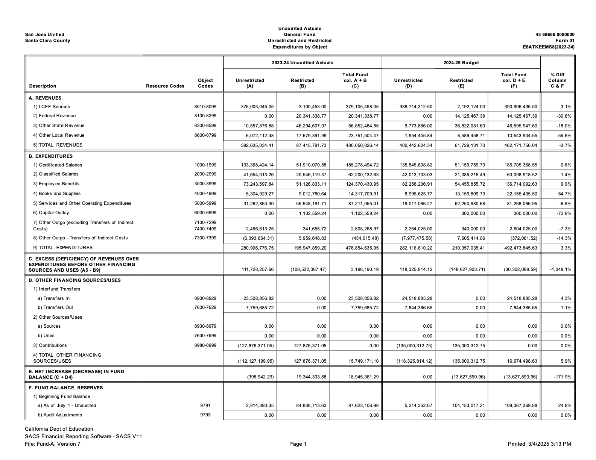
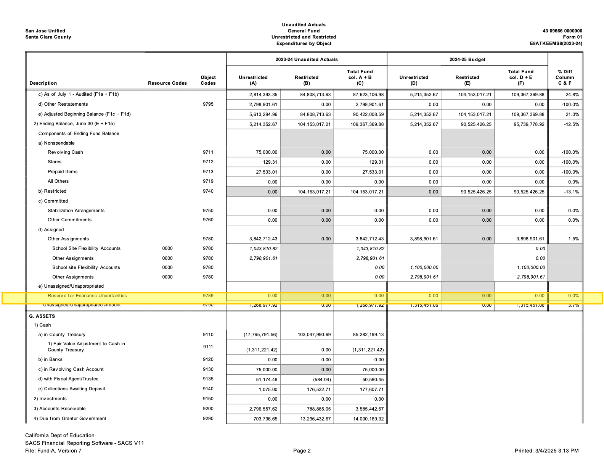
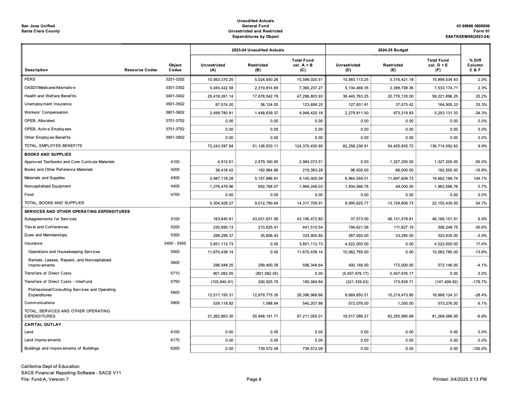
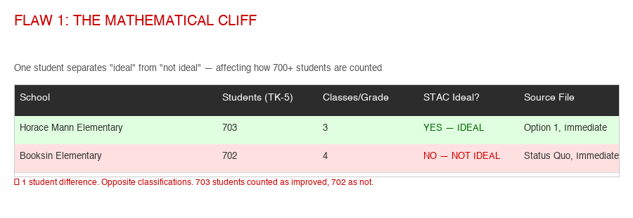
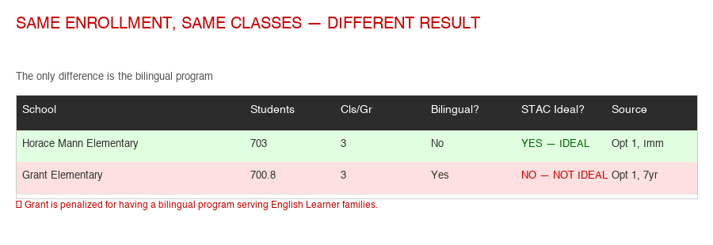
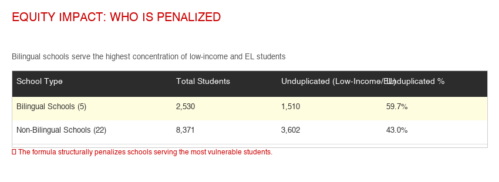

SJUSD的数学：我们的学生是被引导走向成功——还是被压制？
这是一个比关闭学校更安静的故事——但每个SJUSD家庭都与它息息相关：学区如何教数学，以及它如何决定哪些学生能够进入高阶课程。数据显示SJUSD学生的成绩低于邻近学区的同龄人——但正如您将看到的，这个差距关乎的是一个学区所提供的机会和支持，而不是我们孩子的能力。这是一份通俗易懂的指南，讲解这个系统如何运作、它对您孩子意味着什么，以及您可以做什么。
CAASPP 2024–25
同一个县——机会所能成就的
在SJUSD
GATE经费已被取消
这些数字衡量的是各学区表现如何、提供了什么——而不是任何学生有多聪明或多有能力。SJUSD的学生与邻近学区的学生一样聪慧。当邻近学区展示出更高的成绩时，通常是因为成年人所做的选择——学生能多早开始加速、使用什么教材、提供多少支持。这是个好消息：机会是一个社区可以改变的东西。所以在您往下读时，请不要把这个差距看作"我们的孩子落后了"，而要看作"我们的孩子应当拥有同样敞开的大门"——本页接下来的内容就是关于如何做到这一点。
为什么数学分班很重要——以及为什么这不仅仅关乎上大学
人们很容易以为数学分班只对进入名校重要。大学机会确实真实存在——但它是理解这件事的最狭隘的角度。一个中学的分班决定，会以远超一封录取信的方式塑造孩子的选择。
UC和CSU系统要求三年大学预备数学，并强烈建议四年。对于竞争激烈的校区和任何以STEM为先修要求的专业来说，第四年——理想情况下是微积分——实际上是默认的期望，招生官会高度看重高年级课程的难度。一个在6年级被安排进标准路径的学生最多只能修到预备微积分（Pre-Calculus）——开始大学申请时，他们所拥有的高阶课程比竞争激烈校区所看重的要少，这并非因为能力不足，而是因为那条路从未被打开。
修读数学课程是日后收入最强的预测因素之一，而差距是惊人的：2021年5月，STEM职业的工资中位数为95,420美元——是非STEM工作40,120美元中位数的两倍多。而且这不仅仅关乎"科学家"。护理、金融、技术工种、物流、数据，以及数十种待遇优厚的职业，全都以量化课程为门槛。代数被称为"STEM的守门人"，正是因为它所掌控的那扇门通向经济上的向上流动——而不仅仅是一个大学专业。
最深层的问题在于时机。由于加速是循序渐进的，一个在5年级或6年级做出的分班决定极难逆转——一个标准路径的学生若没有需要被邀请才能参加的暑期干预，到高三时根本无法修到微积分。某一天的一场考试，由一个排除了家长和教师判断的公式来评分，就可以悄无声息地关闭学生在高中之前甚至不知道自己已经失去的选择。这不是一个大学问题——而是一个关于谁能够保留自己选择的公平问题。
僵化、不透明的分班并非对所有人都同等公平。对那些转向客观、透明的加速标准的学区（北卡罗来纳州Wake County）的研究发现，这削弱了课程安排与学生种族或收入之间的联系，加强了它与实际能力之间的联系——而基于考试的加速可衡量地提高了代表性不足学生的大学入学率和STEM专业比例。SJUSD采取的是相反的做法：一个排除家长和教师意见的积分公式，应用在一个西班牙裔学生数学达标率仅为19.7%的学区，而这正是那些学校正被关闭、且被过度识别进入特殊教育的同一群体。当把关持续地筛掉同一批孩子时，它就不是中立的。
公平地说：一些研究者认为微积分被过度用作一种分流机制，而且大多数工作从不需要用来给学生排名的高阶数学。这种批评值得认真对待——目标并不是把每个孩子都推进微积分。但它实际上让论点更加锐利：如果高阶数学起着一个高风险的分流门的作用，那么谁掌控着进入那扇门的通道、以及透明度如何，恰恰才是最重要的。一个公平的系统会让门保持敞开，并让家庭参与决策。SJUSD的系统则默认把门关上，然后告诉家长要"耐心"。
教材和分班决定很少像关闭学校那样上新闻。它们是悄悄地、在很短的时间内、在委员会里做出的——而公众评论的窗口可能只有一次会议。但正是这些决定，在每一个上学日都触及您的孩子。以下是为什么保持知情不是可有可无的：
- 这个决定塑造您孩子的日常课堂。学区选择的教材决定了您的孩子被教什么、用什么材料、以及如何教——而且是连续多年。如果这些选择是出于默认（无论是最便宜的还是手头现成的）而非出于什么真正有效，承受这个选择的是您的孩子，而不是做出选择的管理者。
- 这些门一旦关上就很难重新打开。数学是循序渐进的。一个在5年级或6年级设定的分班，或初中一套薄弱的教材，会不断累积——到高中时差距已经很大，微积分/A–G路径可能已经无法企及。没能及时察觉的代价，日后由学生来承担。
- 学区总是先讲它的好消息。公开宣传强调亮点（很高的毕业率），却对那些更棘手的数字（42%的数学达标率、教材质量、谁能被加速）保持沉默。一个只听到标题的家长，可能会错过那个真正预示其孩子未来选择的指标。
- 您拥有权利——但只有及时行使才有意义。教育法§ 51224.7允许您对数学分班提出申诉并签署豁免书；教育法§§ 60002和60200以及Williams法案赋予公众在教材被采用之前审阅并评论的权利。一项您不知道的权利，是一项您无法行使的权利——而评论窗口关闭得很快。
- 家长的关注是这个流程的主要制衡。SJUSD自己的分班公式明确排除了家长和教师的意见。学区唯一无法在设计上排除的，是一位现身的家长——索要您孩子的分班数据、询问采用时间表、在教育委员会会议上发言。知情的家长就是问责。
关注这件事无关学区政治。它关乎在还有时间行动时，为您自己孩子保留敞开的选择。
SJUSD与邻近学区的对比
| 学区 | 数学达标率 | 与SJUSD的差距 |
|---|---|---|
| Cupertino Union SD | 84.5% | +42.5分 |
| Los Gatos Union Elementary | ~72% | +30分 |
| Cambrian SD | ~61% | +19分 |
| Santa Clara Unified | 49.5% | +7.5分 |
| Campbell Union SD | ~45–48% | +3–6分 |
| San Jose Unified | 42.0% | — |
| 加州全州平均 | 37.3% | -4.7分 |
SJUSD内部的人口群体差距揭示了谁被落下：
| 学生群体 | 数学达标率 |
|---|---|
| 亚裔 | 81.9% |
| 白人 | 63.2% |
| 非裔美国人 | 25.0% |
| 西班牙裔 | 19.7% |
| 经济困难学生 | 17.0% |
SJUSD的数学达标率四年来基本持平：39.5% → 38.6% → 39.6% → 40.9% → 42.0%。没有改进计划，没有紧迫感，也没有缩小与邻近学区差距的公开策略。
数学分班系统：逐点解析
SJUSD发布了其初中数学分班标准与流程（2024–25），这是一份8页的文件，列出了一套基于积分的系统，用以决定哪些学生可以修读加速数学。以下是它所说的——以及它对您孩子的意义。
要进入加速数学6（Accelerated Math 6），一名升入6年级的学生需要在三项衡量指标中获得5分或以上：
| 衡量指标 | 标准 | 积分 |
|---|---|---|
| CAASPP（4或5年级，取较高分） | 4级 / 3级 | 2 / 1 |
| NWEA春季RIT（5年级） | ≥第90百分位 / ≥第80 / ≥第70 | 3 / 2 / 1 |
| 5年级进度报告 | 取得足够进步 | 1 |
最高可得：6分。4分的学生可以参加一项挑战测评。低于4分=标准路径，无一例外。
对于7年级：5分=加速数学7；6分及以上=代数1（Algebra 1）。增加课程成绩（A/B = 2分，C = 1分）和此前的加速课程（1分）。
对于8年级：5分及以上=直接进入代数1（跳过Ramp Up）。采用相同的衡量指标，外加此前的课程历史。
这意味着什么：一个全国第85百分位的学生可能被拒之门外
来看一个学区自己例子中的真实情景：
一名5年级学生在NWEA考试中位于第85百分位（优于全国85%的学生），CAASPP获得3级（"达到标准"），并且按其教师所说取得了足够进步。他们的积分：
- CAASPP 3级 = 1分
- NWEA第85百分位 = 2分
- 足够进步 = 1分
- 总计：4分——不能加速
这名学生的表现超过了全国85%的学生。在Cupertino，他们会被安排进加速路径。在SJUSD，他们被安排进标准数学6——并被告知要"耐心"。
学区明确拒绝考虑的因素
分班文件的第6页列出了哪些不属于这个流程的一部分：
- 上一学年数学老师的推荐——那个在学业上最了解您孩子的人
- 当前数学老师的推荐
- 家长的请求——您的声音被明确排除在外
- 私立或独立的测评——Kumon、辅导、社区大学课程都不算数
- 加速课程中的空位——即便有空座，未达到积分的学生也不会被向上调整
加州教育法§ 51224.7（2015年《数学分班法》）赋予家长一些具体权利，这些权利似乎与SJUSD所声明的政策相冲突：
- 分班必须使用多项客观的学业衡量指标——并不论种族、社会经济背景或性别一律统一适用
- 学生必须在学年的第一个月内至少获得一次重新评估
- 家长有权向学区总监申诉分班决定
- 家长可以签署自愿豁免书，在违背学区建议的情况下将孩子安排进不同的课程
SJUSD的分班文件只字未提自愿豁免这一选项。其常见问题解答告诉那些不认同分班结果的家长："我们鼓励您对孩子保持耐心和支持。" 了解您的权利。
标准路径无法到达AP微积分
SJUSD自己的文件展示了四条最常见的高中数学路径：
| 最后的初中课程 | 9年级 | 10年级 | 11年级 | 12年级 |
|---|---|---|---|---|
| 数学8（标准） | 代数1 | 几何 | 代数2 | 仅预备微积分 |
| 数学8 + 暑期Ramp Up | 几何 | 代数2 | 预备微积分 | AP微积分或AP统计 |
| 代数1（加速） | 几何 | 代数2 | 预备微积分 | AP微积分或AP统计 |
| 几何（最高加速） | 代数2 | 预备微积分 | AP微积分或AP统计 | 多变量微积分 |
如果您的孩子在标准路径上，且没有被邀请参加暑期Ramp Up项目（仅限受邀，要求CAASPP 3级以上、NWEA第70百分位以上，且成绩为A或B），那么AP微积分就没有可能了。通往STEM竞争性大学录取的门，在初中就关上了——基于一个排除了家长和教师意见的积分公式。
"但我们的毕业率很高"——为什么那是底线，而不是终点线
当被问及学业时，学区常常指向它的毕业率——约94%。这个数字确实不错，值得肯定。但高毕业率和薄弱的数学成绩可以同时成立——因为文凭衡量的是一个最低标准，而不是准备程度。
在加州，毕业的门槛被刻意设得很低——它本就意在成为每个学生都能跨过的底线：
- 文凭只要求必修课程获得D或以上，而数学最少只需两年。
- A–G资格——即便只是申请UC或CSU的门槛——要求C或以上以及三年数学（建议四年）。一个学生可以拿着数学D成绩毕业，却仍然没有资格申请任何一所加州公立大学。
- 在全州范围内，只有大约54%的毕业生完成A–G，约52%在州仪表板上被评为"大学/职业准备就绪"——远低于毕业率。文凭和准备程度根本就不是同一个衡量标准。
您可以在SJUSD自己的数字里看到这个差距：约94%的毕业率紧挨着42%的数学达标率——意味着58%的学生数学低于年级水平，却仍在拿文凭的轨道上。这不是矛盾；这正是当文凭不要求达标时会发生的事。而它与分班直接相关：一个在6年级被分流出加速路径的学生，仍然可以按时毕业——但可能永远无法完成A–G数学序列或修到微积分。文凭说"完成了"。成绩单却悄悄地说"尚未为大学STEM做好准备"。
所以当学区强调毕业率时，那些真正衡量您孩子未来的问题是：我们的A–G完成率是多少？多大比例的毕业生大学/职业准备就绪？多大比例的学生数学达标？毕业是每个学生都应得的底线。准备程度才是目标——而那正是学区数据所显示的真正差距所在。
课程教材正被停用——而且没有替代它的公开计划
SJUSD在数学6到代数2中使用College Board的SpringBoard课程。这并不是一套学区选择保留或放弃的课程——College Board正在彻底停用SpringBoard。根据College Board自己的时间表：
- 新订单只接受到2025–26学年，而专业培训支持于2026年5月31日结束——此后College Board将不再就此对教师进行培训。
- 高中版本被EdReports评为"不符合预期"——它在最初的第一道关卡（聚焦与连贯性 / 与标准的对齐）上失败得如此彻底，以至于评审者甚至从未对其严谨性或可用性进行评分。继续使用它从来都不是一个稳妥的选项。
- 这意味着SJUSD必须在2026–27采用一套新的数学课程——然而截至本文撰写时，学区尚未公布任何替代方案、任何遴选委员会、任何时间表，也没有任何家长参与的流程。
SJUSD的数学页面声明"数学教学以加州共同核心州立标准（CCSS）为指导"。这是一个关于标准的陈述——即每个加州学区都必须教授的技能——而不是关于SpringBoard这个产品。由此可以得出几点：
- 与Common Core对齐是底线，而不是SpringBoard独有的特性。SJUSD采用的任何替代方案也都会与CCSS对齐——这是州的要求。Cupertino的CPM课程同样与CCSS对齐，而且它获得了EdReports全绿的评级，而SpringBoard的高中版本却没有。
- 领先的独立评审机构实际上反驳了学区的说法。EdReports的第一道关卡评估的恰恰是学区所指的内容——与标准的对齐（聚焦与连贯性）。SpringBoard的高中版本未能通过那道关卡，失败得如此之早，以至于严谨性和可用性从未被评分。"与Common Core对齐"是学区的措辞；而被引用最多的独立课程评审发现这套教材未能充分满足高中标准。
- "继续使用"它不在考虑范围内。由于College Board正在停用这个项目，继续使用SpringBoard将意味着运行一个无支持、已绝版、且没有出版商培训的产品。真正的问题不是是否保留它——而是用哪一套与CCSS对齐、高严谨性的课程来替代它，以及这个选择如何做出。
所以"它与Common Core对齐"并没有回答这个问题——而是回避了它。对齐是法律要求；缺失的是一个透明、公开的采用流程。
- 哪一套课程将在2026–27替代SpringBoard用于数学6到代数2？
- 谁在遴选它？是否有一个课程采用委员会，谁在其中——教师、管理者、家长、社区成员？
- 时间表是怎样的？加州的教材采用流程通常包括试用、对样本教材的公众审阅，以及教育委员会的采用表决。SJUSD在这个流程中处于什么阶段——而它所依赖的产品再过几个月就将失去支持？
- 家长会有发言权吗？州法律（Williams法案和教育法§§ 60002、60200）赋予公众在采用前审阅并评论教材的权利。SJUSD是否安排了任何公众审阅或评论期？
如果您知道有尚未公开的遴选委员会或采用时间表，请告诉我们——我们会更新本页。截至目前，尚未有任何此类信息发布。
与学校关闭的关联：关的是建筑，而不是差距
自2025年9月以来，教育委员会和工作人员几乎所有精力都投入到了"明日学校"关校流程中。在同一时期：
- 数学达标率4年持平——没有向教育委员会提交任何改进计划
- 学区层面不存在任何数学拓展、资优项目或竞赛队——GATE经费已被取消
- 数学课程正被停用，没有公开的替代计划
- 西班牙裔学生——19.7%的数学达标率——正是那些学校被列为关闭目标、且被过度识别进入特殊教育（显著失衡）的同一群体
- 学区的"理想学校"标准衡量的是每个年级的班级数——而不是学业成果、不是考试成绩、不是学生成长
学区要求社区接受不可逆的学校关闭，作为通往"更好教育体验"的途径。但有什么证据表明SJUSD有任何改进数学教学的计划？这些"理想的"合并后学校将提供哪些现有学校无法提供的具体项目？学区从未回答过这个问题——因为关校与学业无关。它关乎人头数。
Cupertino Union School District服务的家庭距离SJUSD仅几英里，却实现了84.5%的数学达标率——是SJUSD的两倍。以下是他们做了而SJUSD没有做的事：
- 公布确切的NWEA RIT分数门槛（235–260+）——而不仅仅是百分位——这样家庭就确切知道孩子需要达到什么
- 允许7年级修代数1，8年级修几何——SJUSD最高的加速路径也只有从加速数学6出发才能在8年级修到几何
- 让大多数初中生在数学上超前两年——这是一种与SJUSD那种限制性把关根本不同的理念
- 初中使用CPM（大学预备数学）——被EdReports评为全绿
差异不在于人口构成或资金——而在于理念。Cupertino假定学生能够在高阶数学中取得成功，并提供通往那里的路径。SJUSD假定他们不能，并设置障碍来证明这一点。
您的参与比学区希望您以为的更重要。以下是具体步骤：
- 索要您孩子的分班数据。学区有义务向您出示用于决定其数学分班的积分。向您学校的校长索要明细。
- 了解您在教育法§ 51224.7下的权利。您可以向学区总监申诉分班。您可以签署自愿豁免书，将孩子安排进高阶课程。学区可能不会告诉您这一点——但这是州法律。
- 询问NWEA百分位的不一致问题。学区使用的是全国RIT常模，而不是您孩子报告上的百分位。询问他们用的是哪个百分位，以及它是如何计算的。
- 在教育委员会会议上要求一份数学改进计划。学区提出了数十个关校方案，却没有提出任何改进数学教学的计划。问：缩小与Cupertino 42分差距的策略是什么？
- 询问哪一套课程将替代SpringBoard。它将在2026–27被停用。计划是什么？谁参与遴选替代方案？家长会有发言权吗？
- 与其他家长建立联系。数学分班流程影响着学区里的每一个家庭。如果您的孩子被拒绝加速，您并不孤单——而且数据表明，这个系统正按其设计运作，限制而非扩大机会。
每位家长都应该问教育委员会的问题：你们想要关闭我们的学校来创建"理想"学校——但你们自己的数据显示58%的学生数学不达标，与邻近学区的差距正在扩大，而且你们没有修复它的计划。关闭建筑如何帮助我们的孩子学习数学？
全貌：SJUSD在加州2025年学校仪表板上的表现
加州对每个学区都依据其官方学校仪表板进行评级，将每项指标从红色（最低）到蓝色（最高）进行颜色标注。每种颜色融合了两个方面：学生目前的表现（现状）和是否在进步（变化）。以下是San José Unified的2025年成绩单——结合上文的数学分析来看，它讲述了一个一致的故事。
颜色并不是对努力程度的评分——它是当前结果与近期变化的融合。这一点很重要，因为一项指标可能仅仅因为分数有所上升就获得"更好"的颜色，而学生实际上仍然远未达到年级水平。请在继续阅读时记住这一点。
数学：一个比看上去更好的黄色
仪表板将SJUSD数学评为黄色——但其背后的数字是低于"达到标准"基准线26.9分。相比之下，英语语言文学被评为更差的颜色（橙色），尽管它仅低于标准5.1分。为什么数学——离年级水平大约远了五倍——反而是"更好"的颜色？因为数学分数上升了3.6分，而ELA保持持平，而颜色奖励的是变化。黄色反映了真实的进步，但它低估了仍有多远的路要走——这正是上文毕业部分"要读懂标题背后含义"的教训。
趋势也证实了这一点：数学自2023年以来有所回升（距标准−34.1 → −30.4 → −26.9分），但仍比2019年更低于年级水平（−20.9）。这是进步，而非抵达终点。
学区平均值背后：又是同一群学生
那一个黄色掩盖了是谁在背负这道差距。在数学方面，12个学生群体中有8个落在最低的两种颜色中——3个红色和5个橙色——而学区平均值则被少数远高于标准的群体所抬高：
| 数学 — 距标准的差距（2025） | 群体 |
|---|---|
| 红色 — 差距最大 | 无家可归学生（−168）· 寄养青少年（−147）· 社会经济弱势群体（−96） |
| 橙色 — 远低于标准 | 长期英语学习者（−169）· 残障学生（−124）· 英语学习者（−97）· 西班牙裔（−89）· 非裔美国人（−73） |
| 绿色/蓝色 — 达到或高于标准 | 亚裔（+90）· 两个或以上种族（+33）· 白人（+29）· 菲律宾裔（+4） |
这与安置分析所预测的、以及显著失衡部分所记录的模式如出一辙：与机会和支持相关的——而非能力——是收入、语言和残障状况。要做的工作不是去"修正"学生，而是为每一个群体打开同样的大门。
毕业是绿色。准备就绪才是真正的考验。
两个绿色指标并排而立，看起来是毫无保留的好消息：92.2%的毕业率和大学/职业指标上57.4%"准备就绪"。准备就绪率的跃升是真实的——从2019年的38.6%上升而来，是一个真正的亮点。但毕业与准备就绪之间的约35分差距正是"底线，而非终点线"那一点：文凭只是最低要求；准备就绪才是目标。而且准备就绪的程度极不均衡——只有15.3%的英语学习者、19.7%的残障学生和11.6%的无家可归学生达到"准备就绪"。
仪表板并不与本页的数学分析相矛盾；它用州政府自己的记分牌印证了这一点。数学在进步，但仍远低于年级水平（−26.9）。讨喜的黄色正是你必须读懂标题数字背后含义的原因。而这些差距每一次都落在同一群学生身上——低收入、英语学习者、寄养及无家可归青少年、残障学生——在数学、出勤和大学准备就绪各方面皆是如此。进步是真实的；公平才是未竟之业。令人鼓舞的是：这些都可以通过成年人的选择来解决——课程、课程开放程度、出勤支持和有针对性的投入——而不是孩子身上缺了什么。
SJUSD可以做得更好之处——数学之外
同一份仪表板指出了其他领域清晰、可以拿下的下一步：
- 长期缺勤（橙色，20.3%）。比全州（17.1%）更差，仍是疫情前9.8%的两倍。寄养青少年（56.5%）和无家可归学生（58.1%）的长期缺勤率高得惊人。学区将5.2%的下降归功于家访——扩大该项目规模、分层实施出勤干预，并重建其自身校园氛围调查所显示正在滑落的学校归属感。
- 英语语言文学（橙色）——颜色评级最低的学科指标。数学受到了关注，但ELA中12个群体里有8个是橙色。SJUSD同样需要一项基于证据的识字计划——早期K–2阅读筛查与干预、阅读科学（science-of-reading）实践，以及将ELD融入识字教学。
- 英语学习者进步（黄色，低于州水平）。EL占学生的22%，长期EL在数学方面处于−169。加强指定式/融入式ELD，并制止长期EL的积压。请注意亮点：近期被重新分类的学生表现出色（ELA中+3.4）——因此更快、有充分支持的重新分类是有效的。
- 为服务不足群体提供准备就绪。为那些远低于"准备就绪"的群体扩大A–G课程的可及性和CTE路径——英语学习者（15%）、残障学生（20%）、无家可归青少年（12%）。
- 纪律处分的公平性。美洲印第安人（红色，9.3%且上升中）、非裔美国人（7.2%）和寄养青少年（11.8%）被停学的比率远高于同龄人。为这些群体投入恢复性实践和行为支持。
- 用好联邦CCEIS资金。由于显著失衡的认定，SJUSD已经必须保留其IDEA资金的15%用于早期干预（见该部分）。将其精准地投向这里显示为红色的群体——这并非额外预算，而是早已写入法律的义务。
显著失衡：SJUSD连续3年因过度认定西班牙裔学生而被标记
加州教育厅根据联邦IDEA法律，连续三年认定San José Unified存在显著失衡——这意味着该学区将西班牙裔学生安置到特殊教育的比率远高于其他群体。尽管被要求采取行动，SJUSD却没有提出任何公开的纠正计划。
时间线：三次违规，毫无行动
- 2022–23：首次认定——有特定学习障碍的西班牙裔和美洲原住民学生
- 2023–24：再次认定——同样的模式持续存在
- 2024–25：第三年被认定——有特定学习障碍的西班牙裔学生
法律的要求
根据联邦法律（IDEA §618(d)），当一个学区被标记为显著失衡时，必须：
- 预留15%的IDEA资金用于综合协调早期干预服务（CCEIS）
- 在被认定后30天内提交一份保证书表格
- 完成一个四步的合规与改进监测（CIM）流程：（1）收集与查询，（2）调查根本原因，（3）制定成果计划，（4）实施与监测
- 提交一份CCEIS计划以及跟踪进展的年度附录
三年过去了——SJUSD做了什么？
尽管自2022年起就被标记，SJUSD却没有任何可公开获取的CCEIS计划。该学区的LCAP和LCAP联邦附录完全没有提及显著失衡、CCEIS，或针对在特殊教育中过度认定西班牙裔学生的纠正措施。相比之下，San Francisco Unified在网上公布了其完整的CCEIS计划，包含透明的根本原因分析和行动步骤。
CIM流程没有取得成果的硬性截止日期——改进通过年度修订进行跟踪，而CDE提供技术援助而非制裁。这意味着一个学区可以年复一年地留在名单上，几乎不受公众问责。SJUSD现已连续三年被标记，没有可见的改进，也没有公开的计划。
Cambrian School District是同一郡内一个规模较小的学区，在2023–24和2024–25年因同样的问题——有特定学习障碍的西班牙裔学生——而被标记。与SJUSD不同，Cambrian采取了公开、有记录的行动：
- 制定了LCAP行动项1.12——"应对残障学生、英语学习者和西班牙裔学生的失衡问题"——明确遵循CDE针对CCEIS的CIM流程
- 专门为CCEIS服务预留了108,575美元的IDEA资金用于2025–26年度（以及2024–25年度的112,000美元）
- 通过意见征询会议和年度需求评估调查让有IEP的学生家长参与进来
- 在其LCAP中自我认定为"失衡目标第2级"，并在时间线违规审查中存在不合规的认定结果
- 公布了进展更新，承认该计划"仍在制定中"，并"正在进行早期家长参与工作和系统完善"
Cambrian服务约3,056名学生。SJUSD服务约32,000名学生。如果一个规模仅为其十分之一的学区能够公开承认其显著失衡的认定结果、为纠正措施编列预算并在其LCAP中报告进展——为什么SJUSD不能？
San Francisco Unified School District是一个同样因显著失衡而被标记的大型城市学区——黑人/非裔美国人、拉丁裔和太平洋岛民学生被过度认定——它采取了全面、有公开记录的纠正行动：
- 组建了一个专门的6人CCEIS团队，由主任Matthew Fitzsimons和Talya Huntley博士领导，设在特殊教育部门内
- 制定并公布了一份经CDE批准的2025年CCEIS计划，详述了根本原因分析、有针对性的干预措施和可衡量的成果
- 启动了Shoestrings计划——一项与Stanford早期儿童研究所合作开发的全方位早期儿童干预，重点是普通教育中的转介前支持
- 将其15%的IDEA特殊教育资金重新分配到为普通教育中学生服务的CCEIS活动——完全符合联邦法律的要求
- 于2025年10月举办了一次CCEIS峰会，汇集教育工作者、家庭和社区伙伴，审查进展并协调策略
- 在网上做到完全透明，设有专门网页详述其CIM流程、显著失衡认定结果和纠正措施
SFUSD服务约49,000名学生——比SJUSD更大。如果San Francisco能够建立一个完整的CCEIS体系，配备专职人员、与Stanford合作并公开报告——SJUSD还有什么借口？
显著失衡与"未来学校"关闭计划之间的关联是直接的：
- 被列为关闭目标的学校不成比例地集中在San Jose市中心和东部——也就是西班牙裔学生聚集的同一些社区
- SJUSD已经在关闭特殊日班（SDC）项目，涉及Graystone、Schallenberger和Empire Gardens——将它们合并到仅3所学校（Washington、Grant、Allen at Steinbeck）。家长们是在未经事先咨询的情况下通过电子邮件收到通知的
- 委员Nicole Gribstad要求将SDC合并问题列入3月27日教育委员会议程的请求被拒绝了
- 该学区同时因过度将西班牙裔学生认定为特殊教育而被标记，又关闭为这些学生服务的学校
SJUSD更广泛的差距
ProPublica的Miseducation项目记录了整个学区的更多差距：
模式很清楚：SJUSD过度将西班牙裔学生认定为特殊教育，却让他们在AP和天才项目中招生不足，以白人学生3×的比率给黑人学生停学，如今又关闭为这些社区服务的学校——而在被列入州监督名单三年之后，仍然拿不出一份公开的纠正行动计划。
悖论：资金更多，学生更少，学校却要关闭
San José联合学区在普通基金收入分别为$4.76亿和$5.04亿的情况下，实现了$2570万（2022–23年）和$1890万（2023–24年）的健康盈余。然而到了2024–25年，学区预计收入仅为$4.62亿，却预算$4.92亿的支出 — 形成$3000万的赤字预算。这是两年内$4900万的剧烈变化。在过去十年中，入学人数减少了6000多名学生 — 下降了20%。尽管每名学生的资金比以往任何时候都多，学区现在却声称必须关闭多达9所小学。
本网站分解了公开可用的财务数据，以便您 — 家长、教师、纳税人和社区成员 — 能够了解资金从哪里来、花到哪里去，以及关闭学校是否真的是唯一的选择。
收入：资金从哪里来？
在深入了解数字之前，有必要先了解加州学区如何获得资金。这并非简单的"政府拨款给学校"。资金有多种渠道、复杂的公式，以及一个使SJUSD与该州大多数学区不同的关键区别。
资金如何流向您的学校
SJUSD的资金实际来源（2024–25）
以下是$4.62亿普通基金预算按来源的构成。请注意房产税的主导地位 — 那个蓝色部分占了每一美元中的85美分。
$390.9M
$46.6M
$14.1M
$1050万（拨款、地块税）
关键公式：LCFF（地方控制拨款公式）
自2013年以来，加州通过LCFF为学校提供资金。简单来说：州政府为每个学区计算一个生均拨款目标，然后检查学区已经征收了多少地方房产税。如果存在差距，由州政府补齐。
SJUSD于2020–21年成为Basic Aid学区。在硅谷，房价位居全国最高之列，房产税收入巨大。这意味着SJUSD的资金与房产价值挂钩，而非学生人数。当家庭离开学区时，资金不会随之流失。加州约10%的学区拥有这一身份。
由此引发的问题：如果失去学生并不意味着失去资金，那么学区为什么声称面临需要关闭学校的财务危机？
十年收入趋势（普通基金）
下表展示了SJUSD的财务状况如何年年增长，即使入学人数持续下降。重要说明：NCES报告的2021–22年$5.32亿数据是所有基金总收入（包括资本和特殊基金），并非仅普通基金。2024–25年数据来自SJUSD自己向CDE提交的LCAP预算概览 — 这是普通基金数据，为$4.62亿。
| 财年 | 总收入 | 同比变化 | 入学人数 | 来源 |
|---|---|---|---|---|
| 2014–15 | $321M | — | ~30,800 | SVTA / Ed-Data |
| 2015–16 | $337M | +5.0% | ~31,000 | Ed-Data (est.) |
| 2016–17 | $355M | +5.3% | ~30,700 | Ed-Data (est.) |
| 2017–18 | $370M | +4.2% | ~30,500 | Ed-Data (est.) |
| 2018–19 | $385M | +4.1% | ~29,600 | Ed-Data (est.) |
| 2019–20 | $397M | +3.1% | ~28,800 | Ed-Data (est.) |
| 2020–21 ★ | $430M | +8.3% | ~26,300 | Ed-Data (est.) |
| 2021–22 | $532M ★★ | +23.7% | ~25,700 | NCES CCD (all-funds) |
| 2022–23 | $476M (GF) | −10.5% | 25,451 | CDE SACS Unaudited Actuals |
| 2023–24 | $504M (GF) | +5.7% | 25,976 | CDE SACS Unaudited Actuals |
| 2024–25 ④ | $462M (GF) | — | 25,409 | SJUSD LCAP Budget Overview (CDE) |
★ SJUSD成为Basic Aid（地方资助）学区。蓝色阴影行包含大量联邦ESSER救济资金。
★★ $5.32亿是NCES确认的2021–22财年所有基金总收入。仅普通基金收入较低。
③ 2022–23普通基金实际：收入$4.764亿，支出$4.43亿 — 盈余$2570万。2023–24普通基金实际：收入$5.036亿，支出$4.769亿 — 盈余$1890万。均来自CDE SACS数据查看器，未经审计实际数据 (viewer.sacs-cde.org).
④ 2024–25普通基金收入：$462,171,756 — 来自SJUSD向CDE提交的官方LCAP预算概览 (PDF). 分项：LCFF $3.909亿（85%）、其他州拨款$4660万（10%）、地方$1050万（2%）、联邦$1410万（3%）。预算支出：$492,473,846 — $3030万赤字预算。
⑤ 趋势：盈余从$2570万（2022–23）→ $1890万（2023–24）→ 然后学区为2024–25年编制了$3030万赤字预算 — 两年内$4900万的剧变。收入下降了$4100万，而支出几乎未变。
相关支出数据（来自Mercury News社论，2025年3月）：支出从$3.66亿（2019–20）增至$4.92亿（2023–24）— 5年内增长34%，而入学人数下降13%，通胀上升20–22%。
SJUSD普通基金收入在2023–24年达到$5.04亿的峰值 — 比十年前的$3.21亿大幅增长 — 尽管学区目前服务的学生减少了约5400名。学区实现了$2570万（2022–23年）和$1890万（2023–24年）的健康盈余。然而到了2024–25年，收入下降了$4100万至$4.62亿，而支出几乎未变 — 产生了$3030万的赤字预算。这是两年内$4900万的剧烈变化。资金去了哪里？
支出：资金花在了哪里？
据Mercury News编辑部（2025年3月）报道，SJUSD支出从2019–20年的$3.66亿增加到2023–24年的$4.92亿 — 仅五年内增长了34%。同期，入学人数下降了13%。学区员工人数实际上略有增加，增长了0.4%。
每一美元的去向
当SJUSD收到$4.62亿时，资金如此分配。可以将其想象成家庭预算 — 只不过涉及五亿美元和25000名依赖它的孩子。
每一美元中约75美分用于人员 — 薪资和福利。这对学区来说是正常的。但这意味着当成本上升时（养老金费率、医疗保险费、谈判加薪），增长非常快 — 而且如果不裁减人员，几乎没有削减空间。问题在于SJUSD为31000名学生设置的人员配置是否适合目前的25000名学生。
据U.S. News Education报道，SJUSD每年每名学生支出约$16,520。主要支出类别大致如下：
员工福利的爆发式增长
一个主要的成本驱动因素是员工福利 — 养老金（CalSTRS、CalPERS）、退休人员医疗保健和其他福利。David Crane在2017年的分析中指出，SJUSD的员工福利从2013–14年的$5860万增长到2014–15年的$7000万 — 一年内增长了19%。到2019–20年，福利预计将消耗学区总收入的25%。
2025年，三个工会（SJTA、CSEA和AFSCME）指控SJUSD自2017–18年以来员工健康和福利福利资金不足超过$3000万。据工会称，学区悄悄地将计算福利缴款的基准从授权员工职位数改为仅填补职位数 — 导致数百万美元未到达员工健康和福利基金。SJUSD首席财务官Seth Reddy承认了这一问题，并表示学区"致力于纠正此事"。
🚨 储备金危机：SJUSD空荡的安全网
加州法律要求每个学区维持最低限度的"经济不确定性储备金" — 本质上是一笔应急基金。对于SJUSD规模的学区（超过1000名ADA），州推荐的最低标准为总支出的2%。这在《加州法规》第5编中有明确规定，并由县教育办公室监督。
以下是SJUSD的表现，基于学区自己向州提交的文件：



SJUSD在2023–24年的期末基金余额为$109,367,369。但其中$1.042亿是受限资金 — 法律规定用于特定项目，不能用于一般运营。仅$520万是非受限的，其中$380万已分配给特定承诺，$10万不可支出，仅剩$127万未分配。经济不确定性储备金项目（对象代码9789）显示为$0。
受限资金$1.042亿包括：其他受限地方资金$4810万、学习恢复紧急拨款$2150万、艺术/音乐拨款$1510万、扩展学习$700万、维护账户$360万。这些资金都不能挪用来填补运营赤字。
这意味着SJUSD至少连续两年在低于州推荐最低储备标准的情况下运营。县教育办公室本应对此发出警告。一个在2024–25年运行$3030万赤字且基本没有非受限储备金的学区正处于严重的财务危险之中。
未审计实际报告显示员工福利成本大幅飙升，有助于解释赤字：
仅健康与福利福利一年就增加了$1190万 — 增长25.2%。员工福利总额从$1.244亿增至$1.367亿（+9.9%）。这与工会声称的2017–18年以来$3000万以上福利资金不足的说法一致。问题是：为什么这些成本没有被规划，为什么关闭学校是建议的解决方案？
管理层薪资：谁拿多少？
SACS数据让我们可以精确分解每一美元薪资的去向。2023–24年，SJUSD的普通基金在薪资上支出了$2.475亿，另外在福利上支出了$1.244亿 — 合计$3.718亿，即总支出的78%，仅用于人员成本。
SJUSD在其管理页面上列出了13名高级领导，由学区总监Nancy Albarrán领导（自2016年任职）。团队包括一名首席财务官、一名副学区总监、一名助理学区总监和9名主管，负责从财务到数据策略到传播的各项事务。
根据SACS数据和NCES人数统计，管理人员平均薪资（持证+分类，99.5个职位）约为每年$215,000。教师平均薪资（1,189名全职等效）约为每年$120,400。学区总监Albarrán的总薪酬在2020年为$367,302（最新公开数据）— 此后可能已增加。
SJUSD为25000名学生雇用了23名学区级管理人员和76.5名校级管理人员。即每251名学生对应一名管理人员。管理人员薪资合计每年$2140万。与此同时，学区声称必须关闭社区小学以节省资金。如果将管理人员人数削减10-15%，而不是关闭学校（或在关闭学校之外），学区能节省多少？
2019–20年支出
约28,800名学生
2024–25年支出（预算）
Revenue: $462M
$30.3M deficit budget
招生人数：不断缩小的学生群体
学区的入学人数一直在持续下降。2008年，SJUSD为大约35000名学生提供服务。到2017–18年，这一数字降至约30500名。如今（2024–25年），入学人数约为25,409名 — 自2008年以来减少了约10000名学生，自2017–18年以来减少了6000多名。
学区将此归因于硅谷高昂的生活成本迫使家庭搬离、出生率下降，以及特许学校和私立学校选择的增加。旧金山纪事报报道，SJUSD在2019–20至2021–22年间拥有湾区十大学区中最大的入学人数降幅：下降了11%。
关键的是，尽管入学人数下降了20%，学区一直维持相同数量的小学（26所），直到今年提出关闭方案。这26所小学中有一半现在服务的学生不足350名。最小的学校学生不足200名。
生均支出：每名学生获得更多资金
这里的数学变得非常有趣。由于收入持续上升而入学人数持续下降，每名学生可用的资金已经大幅飙升。
2014–15年，学区每名学生约有$10,420。到2023–24年，这一数字上升至约$19,390 — 几乎翻倍。统一学区的全州平均水平约为每名学生$18,400。即使2024–25年预算下降，SJUSD仍然每名学生支出约$18,190。如果学区每名学生的资金比以往任何时候都多，为什么还需要关闭学校？
联邦救济资金：ESSER和其他拨款
2020年至2024年间，前所未有的联邦资金浪潮涌入全美各学区，帮助它们度过COVID-19疫情。这笔资金通过中小学紧急救济基金（ESSER）分三轮拨付。
| 轮次 | 联邦法律 | 日期 | 全国总额 | 加州总额 | 截止日期 |
|---|---|---|---|---|---|
| ESSER I | CARES Act | Mar 2020 | $13.2B | ~$1.6B | Sep 2022 |
| ESSER II | CRRSA Act | Dec 2020 | $54.3B | ~$6.7B | Sep 2023 |
| ESSER III | ARP Act | Mar 2021 | $122.8B | ~$13.5B | Sep 2024 |
| Total | $190.3B | ~$23.4B |
加州总共获得了大约$234亿的ESSER资金 — 是所有州中最多的。这些资金根据学区的Title I（低收入学生）拨款进行分配。SJUSD获得了其份额；学区的联邦收入在2020–2024年间大幅增长。
ESSER资金旨在用于：预防COVID传播（个人防护设备、通风、清洁）、解决学校关闭造成的学习损失、心理健康服务、远程学习技术、维持人员编制水平以及暑期/课后项目。ESSER III特别要求至少20%的资金用于基于证据的学习损失补救项目。
所有ESSER资金必须在2024年9月30日之前使用。这个"财政悬崖"意味着将ESSER资金用于持续性支出的学区 — 如雇用新员工 — 现在面临资金缺口。正如Franklin-McKinley学区教育委员会主席George Sanchez就更广泛的影响所说："资金在很大程度上决定了我们学校的课程……学校不再像COVID-19疫情高峰期那样获得联邦资金。"
其他重要资金来源
2016年由选民批准，这项每年$72的地块税每年产生约$500万，持续八年。用于教师留任、学术项目和员工薪资。于2025年6月30日到期。学区试图在2025年5月的特别选举中通过Measure A续期，但选民否决了。选举本身花费了学区$200–$300万。
2012年批准的一般义务债券，用于修缮和升级学校设施 — 教室、科学实验室、技术、安全和能源系统。这笔资金不能用于运营或薪资；严格用于建筑和基础设施。
2024年11月以64.7%的选民支持通过，这项巨额债券将使纳税人每年支付约$8100万，持续约30年（每$100,000评估房屋价值支付$60）。用于设施升级、员工住房建设（计划600+套）和教室现代化。SPUR指出学区在将其列入选票之前未发布任何支出计划。
仅在2023–24年第二季度，Santa Clara County学校就收到了约$2090万的彩票基金，自1985年以来累计近$19亿。彩票基金旨在补充 — 而非替代 — 常规拨款。
SJUSD对学区范围内新建住宅和商业建筑征收开发商费用。这些费用存放在单独的账户中，旨在抵消新开发项目带来的新学生的接纳成本。
债券和地块税：选民批准了什么
在过去25年中，SJUSD选民批准了多项债券措施和地块税。以下是主要项目的摘要：
自2002年以来，SJUSD选民总共授权了近$18.7亿的债券债务 — 加上持续的地块税。仅2024年的Measure R在30年内就将使纳税人支付约$24亿（含利息）。与此同时，学区还获得了每年数亿美元的房产税收入、州拨款和联邦疫情救济。一位Measure R反对者指出："2012年，我们批准了$2.9亿用于修缮……现在学区又要求额外的$11.5亿。"
学校关闭："明日学校"计划
2025年9月，SJUSD教育委员会启动了"明日学校"倡议——评估小学进行可能的合并、关闭或学区边界调整。学区最初提出关闭多达9所小学的方案。经过6周的讨论，STIC审议了8个方案——然后在2026年3月3日，在强大的社区压力下，废除了6个剩余方案中的5个，并将关校上限降至最多4所。2026年3月26日，教育委员会以3–2投票关闭五所小学，自2026–27学年起生效。
学区陈述的理由：自2017–18年以来入学人数下降了20%（减少约6000名学生）；26所小学中有12所现在学生不足350名（比几年前翻倍）；最小的学校学生不足200名；小型学校无法维持辅导员、护士、艺术/音乐项目，也无法避免混合班级。
学区的"理想学校"定义
2025年9月，教育委员会成立了Schools of Tomorrow咨询委员会（STAC）来定义"理想"小学的特征。2025年11月，教育委员会接受了STAC的建议，并成立了Schools of Tomorrow实施委员会（STIC）来决定关闭哪些学校。以下是他们的定义：
每个年级的班级数：
- 标准学校（结构化英语浸入式）：每个年级3个班
- 有专门项目的学校（语言浸入式、双语）：每个年级至少2个班
"理想"学校的最低人员配置：
- 1.0名全职体育教师
- 0.5名全职办公室助理（另有全职办公室经理和办公室专员）
- 1.0名全职校园监督员
- 有Special Day Class或双语项目的学校：额外1.0名全职副校长
合并门槛（由STIC设定）：
- 没有双语项目、300名或更少学生（不包括SDC）的学校 = 合并候选
- 有双语项目、每年级少于4个班的学校 = 合并候选
- 最多4所学校合并（在社区压力下后来添加）
教育委员会批准了9项评估标准供STIC对合并方案进行排名：
- STAC的理想小学建议
- 学校设施状况
- 财务影响
- 设施容量和利用率
- 对特殊项目的影响（双语/Special Day Classes）
- 环境因素（交通、高速公路距离）
- 学生人口统计平衡
- 交通需求
- 入学和出勤模式
STAC标准设定了每年级最少班级数，但对以下内容完全沉默：
- 最大班级规模——没有上限，因此"理想"学校每班可能有35名以上学生
- 师生比——研究一致表明与教育成果相关的指标
- 学业表现——考试成绩、毕业率和学生成长不是公式的一部分
- 社区和家庭意见——没有让家长对什么使他们的学校理想发表意见的机制
结果是：一所每年级有3个过度拥挤教室的学校是"理想的"，而一所拥有2个资源充足、表现出色的教室的学校则是关闭候选。
学区承诺了什么
SJUSD表示受影响的学校在过渡年将获得两倍于正常水平的资金。接收新学生的学校也将获得双倍资金。将为距新学校超过1.5英里的学生提供校车服务。将提供三小时免费课后活动。工作人员的职位将得到保留。
未回答的问题：学校关闭后会怎样？
学区表示关闭学校将为学生提供"更好的服务"——但没有解释这些服务是什么、如何筹集资金、或为什么需要关闭学校。以下是学区尚未回答的关键问题：
学区多次声明关闭学校"不是出于财务考虑"，而是为了"为所有学生提供最好的教育体验"。然而学区正面临3030万美元赤字。如果没有财务问题，将数千名儿童连根拔起的教育理由是什么？如果有财务问题，为什么不直说？
学区声称小型学校"无法维持心理咨询师、护士、艺术/音乐项目"。但从未发布过一份计划，说明合并后接收学校将增加哪些具体服务。会有更多心理咨询师吗？更多护士吗？新项目吗？多少人、在哪些学校、由哪项预算支付？这些都没有具体说明。
学区没有公布任何关闭学校的预期节省。研究一致表明，学校关闭往往比预期花费更多——由于交通、过渡支持、空置建筑维护，以及被迫搬迁的家庭离开学区导致的入学人数下降。成本效益分析在哪里？
学区对关闭学校的物理资产将如何处置只字未提。会被出售吗？出租吗？改作他用吗？闲置吗？2024年11月，选民批准了11.5亿美元的Measure R债券用于学校设施——但没有披露学区正计划关闭其中多达9所学校。家长们在问：我们是否刚刚批准了债券来翻新学区已经计划关闭的建筑？
学区承诺一年的"双倍资金"和"校车服务"。但第二年怎么办？当过渡资金结束时，接收学校将面对更多学生却没有额外资源。学区将如何支持情绪受影响的学生——特别是失去熟悉日程、教职员工和环境的有IEP的Special Day Class学生？学区自己的数据显示，在所有方案中，被拒绝替代入学的学生100%是IEP学生。
关于学校关闭的全国性研究表明，它们很少兑现承诺的好处。芝加哥大学的一项研究发现，关闭学校对被转学的学生没有带来学业提升，却对其社会情感健康产生了显著的负面影响。国家教育政策中心发现，关闭学校对低收入学生和有色人种学生造成不成比例的伤害——正是SJUSD自己的数据显示将承受最大负担的群体。
加州法律（教育法典 § 44949 和 § 44955）要求学区每年在3月15日之前通知持证员工（教师、咨询师、护士、图书馆员）可能的裁员。如果学区错过这个截止日期，就不能在下一学年解雇这些员工。
这就是为什么教育委员会投票最初定在3月12日——恰好在裁员截止日期前三天。整个仓促的时间表——2月3日宣布方案、压缩的STIC会议、3月3日的建议——都是为了及时通过关闭投票，以便在3月15日之前发出裁员通知。3月3日，STIC推迟了建议并请求延期至3月26日——但3月15日裁员截止日期已过，引发了学区是否仍发出预防性裁员通知的疑问。
对于分类员工（保管员、办公室职员、教学助理），教育法典 § 45117要求在裁员生效前提供60天书面通知——这意味着7月1日生效的通知需要在5月1日之前发出。
社区有权知道：这个时间表是由学生的最佳利益驱动的，还是由人事截止日期驱动的？如果学区真的相信关闭学校是正确的决定，为什么不花时间把事情做好——即使这意味着要等到明年？
底线：学区正在要求社区接受不可逆转的学校关闭，而依据的是未定义的承诺、未计算的节省、未编写的关闭后计划——以及一个不是由学生需求驱动，而是由人事裁员截止日期驱动的时间表。
家长们在说什么
家长和社区成员正在强烈反对。许多人指出，一些被列为关闭目标的学校是表现优异、需求旺盛的社区学校。正如一位家长就Simonds Elementary给教育委员会写信时所说："关闭一所规模适当、学术实力强、项目丰富的学校，直接与学区所概述的框架相矛盾。"
2026年2月10日STIC会议：变更内容
在2月10日的会议上，"明日学校"实施委员会采取了重大行动：
方案三被撤回 — 委员会投票决定将其从考虑范围中移除。
新增三个方案：
- 方案四：结合方案一和方案二。提升交通安全指标（8.4、7.8.4a、7.8.4b）。保护过去7年内已被迁移的SDC项目。保持标准一（理想学校规模）为优先。
- 方案五：要求任何关校方案都保持所有学生一起转移，SDC项目与学生群体保持一致。将学前班（Pre-K）与普通学生群体同等对待。
- 方案七：降低7年预测指标的优先级，优先考虑即时采纳指标。侧重于第一级标准。
方案六未通过 — 一项保持SDC学生在一起（不包括SDC学前班）的动议未获通过。
2026年3月3日：转折点
在强大的社区压力下——家长们威胁采取法律行动，纳税人请求冻结Measure R债券资金的禁令——STIC采取了戏剧性的行动：
- 废除6个方案中的5个——所有大规模关校计划（方案1、1.2、2、2.2、4、5、5.2、7）全部废弃
- 关校上限降至最多4所——从之前的最多9所大幅缩减
- 新标准：仅限学生人数低于300人且无双语项目的学校
- 指示工作人员制定两个新方案，在3月10日会议上提出
- 请求延期至3月26日（原教育委员会投票定于3月12日）
STIC主席Patrick Bernhardt："我相信我们迫切需要采取行动解决最小型学校的问题。但我认为关闭9所学校……不是正确的行动。"
在推迟了原定3月12日的投票后，教育委员会以3–2投票关闭五所小学 — 五所均为Title I学校，服务大量低收入学生和有色人种学生：
Canoas · Empire Gardens · Gardner · Lowell · Terrell
Hammer Montessori从Galarza迁至Gardner。据报道的学生重新分配：Empire Gardens → Anne Darling · Canoas → Ernesto Galarza · Gardner → Horace Mann · Lowell → Washington（特殊教育班SDC → Grant）· Terrell → Rachel Carson（特殊教育班SDC → Reed）。学区已于5月1日前通知各家庭分配结果。
投票情况 — 赞成：José Magaña、Carla Collins、Teresa Castellanos · 反对：Brian Wheatley（副主席）、Nicole Gribstad。会场爆发"可耻"的喊声。投反对票的Wheatley说："San Jose Unified是一只独角兽……我们已不再受招生下降的财务影响。"
投票前一天，超过18名社区成员提交了一份统一投诉程序（UCP）投诉，指控该程序违反州和联邦的公平保护规定，在结构上排斥了最弱势的家庭，并迫使年仅5岁的儿童步行长达60分钟上学。学区有60天进行调查；家长计划向加州教育厅上诉。
Mercury News调查（2026年2月28日）发现，SJUSD的方法论与Oakland联合学区2022年关校计划如出一辙，后者引发了加州总检察长Rob Bonta的民权调查。Bonta认定Oakland的计划"将对黑人和低收入小学生以及部分残疾学生产生统计上显著的不成比例影响。"
与Oakland一样，SJUSD依赖入学人数和设施条件——相同的方法论。Mercury News发现：27所潜在关校学校中有10所西班牙裔/拉丁裔学生比例高于平均水平；11所学校英语学习者比例高于学区平均水平；拟议关校主要集中在市中心和东San José，而Almaden Valley基本未受影响。
Oakland在总检察长调查后于2023年1月撤销了所有关校决定。
加州教育部已根据联邦IDEA法律将SJUSD认定为显著不成比例，连续三年——而该学区至今仍未解决：
- 2022–23年：首次认定——西班牙裔和美洲原住民学生被归类为特定学习障碍
- 2023–24年：再次被认定——相同模式持续
- 2024–25年：第三年被认定——西班牙裔学生被归类为特定学习障碍
根据联邦法律（IDEA §618(d)），显著不成比例意味着某一种族或族裔群体被归入特殊教育类别的比率远超其他群体——在同一指标上连续三年。被标记后，学区必须：
- 预留15%的IDEA资金用于综合协调早期干预服务(CCEIS)
- 在认定后30天内提交保证书
- 完成4步合规与改进监测(CIM)流程：(1)收集与调查，(2)调查根本原因，(3)制定结果计划，(4)实施与监测
- 提交CCEIS计划及跟踪进展的年度附录
三年过去了——SJUSD做了什么？
尽管自2022年起就被标记，SJUSD没有公开可查的CCEIS计划。该学区的LCAP和LCAP联邦附录完全未提及显著不成比例、CCEIS或针对西班牙裔过度识别的纠正措施。作为对比，旧金山联合学区在线公布了完整的CCEIS计划，包含透明的根本原因分析和行动步骤。
CIM流程没有硬性截止日期来实现结果——进展通过年度附录跟踪，CDE提供技术援助而非制裁。这意味着一个学区可以年复一年地留在名单上，几乎没有公共问责。SJUSD已连续三年被标记，没有可见的改善，也没有公开的计划。
Cambrian学区是同一县内的一个较小学区，因同样的问题——西班牙裔学生被归类为特定学习障碍——在2023–24和2024–25年被标记。与SJUSD不同，Cambrian采取了公开、有记录的行动：
- 创建了LCAP行动项目1.12——"解决残障学生、英语学习者和西班牙裔学生的不成比例问题"——明确遵循CDE的CIM/CCEIS流程
- 预留了$108,575的IDEA资金用于2025–26年（2024–25年为$112,000），专门用于CCEIS服务
- 通过座谈会和年度需求评估调查让IEP学生家长参与
- 在LCAP中自我识别为"不成比例目标级别2"，并发现不合规问题
- 发布进展更新，承认计划"仍在发展中"，"早期家长参与努力和系统完善正在进行中"
Cambrian服务约3,056名学生。SJUSD服务约32,000名学生。如果一个规模只有十分之一的学区能够公开承认其显著不成比例发现、预算纠正资金并在LCAP中报告进展——为什么SJUSD不能？
旧金山联合学区，一个同样因显著不成比例被标记的大型城市学区——非裔美国人、拉丁裔和太平洋岛民学生被过度识别——采取了全面的、公开记录的纠正措施：
- 组建了6人专职CCEIS团队，由主任Matthew Fitzsimons和Talya Huntley博士领导，隶属于特殊教育部门
- 制定并发布了经CDE批准的2025年CCEIS计划，详细说明了根本原因分析、针对性干预措施和可衡量的成果
- 启动了Shoestrings项目——与斯坦福大学幼儿研究所合作开发的全方位早期儿童干预项目，专注于普通教育中的转介前支持
- 将15%的IDEA特殊教育资金重新分配给服务于普通教育学生的CCEIS活动——完全按照联邦法律要求
- 于2025年10月举办了CCEIS峰会，汇集教育工作者、家庭和社区合作伙伴，审查进展并协调策略
- 在线发布完全透明的信息，设立专门网页详细说明其CIM流程、显著不成比例调查结果和纠正措施
SFUSD服务约49,000名学生——比SJUSD更大。如果旧金山能够建立完整的CCEIS基础设施，配备专职人员、与斯坦福合作并进行公开报告——SJUSD的借口是什么？
这对学校关闭意味着什么
显著不成比例与"明日学校"关校计划之间的联系是直接的：
- 被列为关闭目标的学校不成比例地集中在市中心和东San José——正是西班牙裔学生集中的社区
- SJUSD已在关闭特殊日间课程(SDC)项目——Graystone、Schallenberger和Empire Gardens的项目被合并到仅3所学校（Washington、Grant、Allen at Steinbeck）。家长们仅通过电子邮件被通知，未经事先协商
- 教育委员Nicole Gribstad的请求——将SDC合并议题加入3月27日董事会议程——被拒绝
- 该学区同时因过度将西班牙裔学生识别为特殊教育而被标记，又在关闭服务这些学生的学校
SJUSD更广泛的差距
ProPublica的Miseducation项目记录了该学区的更多差距：
模式很清晰：SJUSD过度将西班牙裔学生识别为特殊教育，在AP和天才项目中招收不足，以3倍于白人学生的比率停学黑人学生，现在又在关闭服务这些社区的学校——同时在被列入州监视名单三年后仍未提出公开的纠正行动计划。
2月24日：新选项及完整指标已发布。子选项1.2、2.2、5.2推出。✓
3月3日：STIC废除6个方案中的5个。指示工作人员制定新方案（最多4所关校，300人以下，无双语学校）。✓
3月5日： 已取消。
3月7日：教育委员会公开听证会——审议STIC建议。855 Lenzen Ave。
3月10日：特别教育委员会会议（下午4:30）+ STIC会议（下午6:00）。新方案将在此提出。855 Lenzen Ave, Room 150。
3月12日： 原定教育委员会投票日——可能推迟。
3月26日：STIC请求的最终建议新截止日期。
地图：面临关闭风险的学校
以下地图显示3月3日重置前所有曾考虑的方案。所有这些方案均已废除。它们保留于此供参考——展示学区在社区压力迫使其改变方向之前所提议的范围。新方案（最多4所关校，300人以下）将在3月10日STIC会议上提出。
学区表示需要关闭学校，因为入学人数下降了。但收入每年都在增长，生均资金在十年内大约翻了一番。学区在2020–21年成为Basic Aid学区，意味着其收入与房产税挂钩 — 而非入学人数。它获得了大量联邦ESSER资金。选民刚刚批准了$11.5亿的债券。
因此，家庭和纳税人正在问的问题是：如果每名学生的资金比以往任何时候都多，为什么不能维持较小的学校？所有这些钱到底去了哪里？
独立审计：学区的"理想学校"公式存在根本性缺陷
我们下载了学区发布的方案1、2、3及现状的精确指标电子表格（V.i. 指标计算 — 即时和7年变体），并审计了关闭分析背后的实际Excel公式。我们还分析了官方2月10日指标汇总表，比较所有方案在11个标准上的表现。我们的发现令人深感忧虑：用于证明关闭最多9所学校的方法论包含产生不可靠结果的结构性缺陷 — 而学区自身的汇总数据显示关闭在大多数指标上使情况恶化。
缺陷一：二元分类 — 数学悬崖
学区的主要指标 — "理想学校中的学生百分比"（指标1.1）— 是一个二元开/关开关。一所学校要么"理想"，要么"不理想"。没有渐进改善，没有细微差别，也没有对教育质量的真实衡量。标签可能因电子表格中四舍五入造成的非常小的数字变化而翻转。
来自实际电子表格数据：

Horace Mann有703名学生、每年级3个班被归类为理想。Booksin有702名学生、每年级4个班被归类为不理想。两者之间只差一名学生。但在"理想学校中的学生百分比"指标中，703名Horace Mann学生全部被计为"改善"，而702名Booksin学生计为零。这不是合理的教育方法论 — 这是一个数学悬崖。
在2月24日理由文件（附录A，第13页），学区自己承认："学生在指标1.1、7.1.1a和7.1.1b中被评为在理想规模学校或不在理想规模学校。换句话说，评分具有二元成分。对于非常接近理想规模范围上限或下限的学校，招生人数的微小差异有时会对指标1.1、7.1.1a和7.1.1b的结果产生可测量的影响。"这正是我们在上面发现的缺陷——然而学区继续使用这个二元公式作为所有关校决定的主要驱动因素。
缺陷二：双语惩罚 — 结构性歧视
我们的审计发现了一个在所有方案和所有时间范围内100%一致的模式：拥有双语项目的学校被要求达到比非双语学校更高的入学标准。

非双语学校在每年级3个班（约530+学生）时被归类为"理想"。双语学校必须达到每年级4个班（约780+学生） — 入学门槛高出47%。这在61个数据点中是完美的100%相关性：每一所3个班的非双语学校都是"理想"的，而每一所3个班的双语学校都是"不理想"的。

受影响的是谁？双语学校服务的是学区最弱势的学生：

SJUSD的五所双语学校（Gardner、Merritt Trace、Walter L. Bachrodt、Washington和Willow Glen）服务2,530名学生，非重复计算率为59.7%（低收入、英语学习者和寄养青少年）。非双语学校平均为43.0%。STAC"理想"公式迫使这些学校 — 服务最需要支持的儿童的学校 — 达到更高的入学门槛才能被视为"理想"。这是嵌入电子表格中的结构性歧视。
缺陷三：因入学人数多而受到惩罚的学校
该公式将"理想"定义为单一点 — 而非范围。学生过多与学生过少受到同样的惩罚。在所有方案中，有12个实例显示每年级4个班（700–839名学生）的非双语学校被归类为"不理想" — 不是因为学校运营困难，而是因为公式认为学校规模过大。
例如，方案二中Simonds Elementary有839名学生被归类为"不理想" — 不是因为学校运营困难，而是因为公式认为其"太大"。一所拥有每年级4个班和强劲社区需求的学校，与一所衰退中的学校被同等对待。STIC公式没有健康范围的概念 — 只有一个目标点，高于或低于该点的一切都被评为零分。
缺陷四：7年预测中的虚假精度
决定学校是否跨过门槛的7年入学预测精确到13位以上小数：

Allen at Steinbeck预计2032–33年有554.8947070312856名学生。Canoas预计有539.8名学生。在7年预测中15名学生的差异 — 受出生率、房价、移民和无数不可预测因素的影响 — 决定了一所学校被归类为"理想"还是"不理想"。没有任何入学模型能以这种精度进行预测。然而这些数字被作为不可逆转的学校关闭的依据。
缺陷5：全貌——学区自身指标揭露全部8个选项
学区2月24日的快速指标对比表现在涵盖了所有8个选项加上现状——包括工作人员推荐的"改进"变体1.2、2.2和5.2。当超越单一的"% 理想"指标来看时，每个关闭选项几乎使其他所有方面变得更糟：
安全与社区影响（即时分析）
| 指标 | 现状 | 选项1 | 1.2 | 选项2 | 2.2 | 选项4 | 选项5 | 5.2 | 选项7 | 结论 |
|---|---|---|---|---|---|---|---|---|---|---|
| "理想"学校学生比例 (1.1) | 24% | 51% | 56% | 65% | 60% | 55% | 47% | 42% | 70% | 基于有缺陷的二元公式 |
| 设施质量 (1.2, 0–12) | 9.9 | 8.7 | 8.6 | 8.6 | 8.6 | 8.9 | 9.6 | 9.3 | 8.9 | 现状胜出 |
| 可步行上学 (8.2) | 87% | 79% | 79% | 76% | 77% | 76% | 75% | 72% | 76% | 现状胜出；5.2最差 |
| 穿越55mph道路 (8.4) | 12% | 13% | 12% | 16% | 14% | 9% | 18% | 18% | 17% | 选项5/5.2最差 |
| 非重复学生穿越55mph (7.8.4a) | 17% | 17% | 16% | 21% | 18% | 11% | 26% | 26% | 25% | 选项5/5.2: 26% |
| 与同伴分离的学生 (11.2) | N/A | 832 | 1,216 | 563 | 747 | 1,479 | 0 | 530 | 1,245 | 选项4最差：1,479 |
| 生均设施成本 (3.1) | $950 | $711 | $711 | $647 | $647 | $750 | $815 | $782 | $723 | 关闭节省成本 |
学区自身的数据显示没有好的关闭选项。选项4安全性最好（9%穿越55mph——甚至优于现状），但社区凝聚力最差（1,479名学生分离）。选项5/5.2保持社区团结（0名分离），但最不安全（26%的非重复学生穿越55mph道路）。选项7在有缺陷的"理想"指标上得分最高（70%），但7年后降至仅56%。现状在设施质量、步行性和整体安全方面仍然胜出。
学区建议用"改进"变体1.2和2.2替换选项1和2。但数据讲述了不同的故事：选项1.2使1,216名学生与同伴分离——比选项1的832名多46%。选项2.2使747名学生分离，而选项2为563名（多33%）。更糟的是，选项1.2将分离学生中的非重复比例从45%提高到54%，意味着"改进"不成比例地伤害了最脆弱的家庭。
缺陷6：不成比例的影响——公平炸弹（现已在全部8个选项中确认）
学区自身的标准7（人口统计平衡）和标准11（过渡影响）数据——现在覆盖全部8个选项——揭示了毁灭性且普遍存在的公平失败：
| 指标 | 学区 | 选项1 | 1.2 | 选项2 | 2.2 | 选项4 | 选项5 | 5.2 | 选项7 |
|---|---|---|---|---|---|---|---|---|---|
| 被迫转学的非重复% (7.7a) | 47% | 64% | 64% | 54% | 54% | 57% | 70% | 59% | 66% |
| 被迫转学的IEP% (7.7b) | 15% | 21% | 21% | 16% | 16% | 15% | 20% | 18% | 20% |
| 与同伴分离的学生 (11.2) | N/A | 832 | 1,216 | 563 | 747 | 1,479 | 0 | 530 | 1,245 |
| 未获替代方案的非重复% (7.11.3a) | 47% | 68% | 68% | 71% | 71% | 69% | 70% | 70% | 66% |
| 未获替代方案的IEP% (7.11.3b) | 15% | 100% | 100% | 100% | 100% | 100% | 100% | 100% | 100% |
| 非重复步行区域 (7.8.2a) | 79% | 71% | 71% | 70% | 70% | 68% | 62% | 61% | 69% |
在每一个选项下——包括学区最新的"改进"变体——必须转学且家庭未获得替代入学机会的学生中，100%是有IEP的学生（指标7.11.3b）。这不是某个选项的缺陷；这是内置于方法论本身的。与此同时，选项5——旨在"保持社区团结"的——具有最严重的公平负担：70%的被迁移学生是非重复学生（对比学区平均47%），且只有62%的非重复学生可以步行上学（从79%下降）。
这意味着什么：反对继续推进的法律和伦理依据
关闭学校是不可逆转的。它会动摇学生的稳定性，撕裂社区，并永久性地降低公众对公共教育的信任。当底层方法论存在缺陷时 — 数据表明确实如此 — 由此得出的结论不能被视为可靠。教育委员会在这些方法论缺陷得到独立审查和纠正之前，不得就学校关闭进行投票。
法律保护是存在的。加州法律和联邦民权法规为挑战基于有缺陷或歧视性方法论的关校决定提供了多种依据：
- AB 1912（教育法典§ 41329）：要求学区在任何关校之前进行公平影响分析，包括关校是否对任何人口群体产生"不成比例的影响" — 特别是英语学习者。系统性惩罚双语学校的方法论可能不符合这一要求。加州总检察长于2023年4月发布全州指导意见，明确警告关校不得加剧种族隔离或不成比例地影响任何学生群体。
- Oakland Unified先例（2022–2024）：当OUSD投票关闭7所学校时 — 其中四所目标学校的黑人学生占50%以上，而全区仅为20% — ACLU向总检察长提交投诉，总检察长展开调查并认定关校"将不成比例地影响黑人和低收入小学生"。OUSD于2023年1月撤销了所有关校决定。
- National Teachers Academy诉Chicago Public Schools案（2018）：法院发出了初步禁令 — 全国历史上首次以种族歧视为由阻止学校关闭 — 因为CPS自身的标准并不能证明关校的合理性，且影响不成比例地落在少数族裔学生身上。
- Save Our Schools诉Barstow USD案（2015）：加州上诉法院推翻了一项学校关闭决定，因为学区"在没有必要的统计数据之前无法正确确定豁免是否适用"。数据必须支持决策。
- 《民权法案》第六章/《平等教育机会法》：系统性惩罚服务英语学习者和低收入家庭的双语学校的方法论，构成联邦法律下的差异影响索赔。EEOA（20 U.S.C. § 1703）为家庭提供私人诉讼权。
在教育委员会就学校关闭投票之前，社区应该要求：
1. 对STIC指标电子表格和STAC"理想学校"公式进行独立的第三方审计。
2. 从方法论中移除双语惩罚 — 双语学校不应面临更高的入学门槛。
3. 采用连续量表而非二元开/关开关来衡量学校质量的方法论。
4. 就公式为何将非双语学校的每年级4个班视为"不理想"提供透明度 — 惩罚招生人数高且社区需求强的学校。
5. 符合AB 1912要求的正式公平影响分析，由加州司法部审查。
分析：关闭学校在财务上合理，还是暴露了管理不善？
学区将关闭学校定性为应对入学人数下降的必然之举。但当你审视财务证据时，一幅不同的图景浮现 — 这表明真正的问题不是学生太少，而是学区如何管理其不断增长的资源。
学区的论点与数据的对比
学区的说法："我们比2017–18年少了6000名学生。我们无法维持26所小学。"
数据显示的情况：普通基金收入从$3.7亿（2017–18年，估计）增长到$4.62亿（2024–25年LCAP）— 增长了25% — 同期入学人数下降了20%。生均普通基金收入从约$12,100上升至约$18,200。学区在2020–21年成为Basic Aid学区，意味着其资金与房产价值挂钩，而非学生人数。即使没有新增一名学生，随着硅谷房产价值上涨，收入将继续增长。然而学区预算的是$3030万赤字 — 支出$4.92亿，而预计收入仅为$4.62亿。
以一所250名学生的学校为例。按普通基金生均收入$18,200（2024–25年LCAP）计算，该学校产生约$455万的收入。即使运营一所小学的全部成本为每年$300–$400万（人员、设施、公用事业），这所学校也不止能自给自足。学区尚未公布逐校成本数据来反驳这一计算。
财务管理不善的迹象
多个独立来源描绘了一个存在严重财务治理问题的学区：
1. 大陪审团称学区"漂泊不定" — 而教育委员会否决了警告。2024年6月，Santa Clara County民事大陪审团在进行了80次访谈并审查了500份文件后，发布了一份42页的报告，题为"漂泊不定的学区"。报告发现了领导层高流动率（两年内54%的校长流失，而可比学区为22%）、缺乏学生健康中心、安全漏洞以及整体缺乏透明度。关键的是，大陪审团指出这些问题与学区自己2023年学校氛围调查的发现一致 — 这意味着教育委员会已经掌握了显示相同问题的内部数据。在2024年7月一场五小时的教育委员会会议上，委员会一致投票否决了几乎所有调查结果。学区总监将报告斥为"不具代表性、具有误导性和不准确"。即使是教师协会主席也承认："这份报告中没有一项发现是我没有与学区领导讨论过的。"换句话说：他们知道，却选择不采取行动。
2023年：SJUSD自己的学校氛围调查发现了员工和家长对信任、士气和领导力的担忧。
2024年6月：大陪审团发布"漂泊不定的学区" — 通过80次独立访谈证实了相同的问题。
2024年7月：教育委员会一致否决了几乎所有大陪审团调查结果。学区总监称报告"具有误导性"。
2024–25年：学区通过了$3030万赤字预算，经济不确定性储备金为$0。
2025年：工会揭露自2017–18年以来$3000万以上的健康福利资金不足。选民否决了Measure A地块税。
2025年底–2026年：学区宣布计划关闭多达9所小学。
2. 据称超过$3000万的健康福利资金不足。三个员工工会声称学区悄悄更改了计算福利缴款的公式，自2017–18年以来少付员工超过$3000万。学区的首席商务官承认了这一差异。
3. 支出增长超过入学人数和通胀。从2019–20年到2023–24年，支出增长了34%（$3.66亿→$4.92亿），而入学人数下降了13%，员工人数实际增加了0.4%。同期通胀约为20–22%。支出增长实质上超过了通胀——即使不考虑入学人数的下降。
4. $11.5亿Measure R债券没有支出计划。受尊重的湾区政策组织SPUR指出，学区在2024年将一项高达$11.5亿的巨额债券列入选票，却未发布详细的支出计划向纳税人说明资金将如何使用。
5. 选民否决了地块税续期。2025年5月，选民对续期Measure Y每年$72的地块税投了"反对票"。Mercury News编辑部建议否决，理由是学区未能展示财务责任。选举本身花费了学区$200–$300万。
6. 经济不确定性储备金为零——低于州法定最低标准。SACS备案文件显示，SJUSD指定的经济不确定性储备金至少连续两年（2022–23年和2023–24年）为$0。加州要求SJUSD规模的学区将至少2%的支出作为可用储备金（约$950万）。SJUSD在2023–24年的总非受限储备金仅为$130万（0.27%）——低于州最低标准$830万。
财务改革建议
1. 独立财务审计：社区应要求对SJUSD的财务进行独立的第三方法务审计——不是由学区自行选择的审计师进行的标准年度审计，而是由县教育办公室或县监事会委托的全面审查，检查过去5年每一美元的去向。
2. 逐校成本透明度：在关闭任何学校之前，学区应公布运营每所小学的实际成本——包括人员、设施、公用事业和间接费用——以及每所学校通过生均拨款产生的收入。没有这些数据，任何关闭决定都是任意的。
3. 削减行政成本：入学人数下降了20%，但员工人数增加了0.4%，学区应证明在要求社区牺牲其社区学校之前，已首先用尽了行政效率措施。
4. ESSER资金问责报告：应公开所有ESSER资金收支的完整逐项核算——包括是否有一次性资金被用于持续性支出。
5. 债券支出计划：学区应在进行任何支出之前，发布$11.5亿Measure R债券资金的详细、逐校支出计划。
政治建议
致市议会和市长办公室：虽然市政府不直接控制学区，但学校关闭深刻影响社区、房产价值、公共安全和社区凝聚力。市长和议会应利用其公共影响力要求SJUSD在推进关闭之前实现财务透明。
致州议员：参议员Dave Cortese和众议员Ash Kalra应考虑提出立法，要求Basic Aid学区发布年度透明度报告，说明超出LCFF保障额的多余房产税收入如何使用——并在任何关闭行动之前强制要求逐校成本核算。
致县监事会：监事会应考虑利用其权力要求县教育办公室对SJUSD的财务管理进行独立审查，跟进大陪审团的调查结果。
致SJUSD教育委员会候选人（2026年选举）：任何教育委员会候选人都应承诺在继续关闭程序之前完成全面的独立审计并公布逐校成本数据。
邻近学区比较
SJUSD并非Santa Clara县内唯一面临入学人数下降的学区。但其应对方式——以及其财务轨迹——格外突出。让我们看看邻近学区如何应对类似挑战。
Cupertino联合学区（CUSD）
CUSD也服务于San José部分地区，面临严重的入学人数下降——自2015–16年以来失去了4,900多名学生。它在2022年关闭了三所小学（Regnart、Meyerholz和合并的Muir）。然而，CUSD目前在2024–25财年运行着$2600万赤字，预计2025–26年赤字$1100万。与SJUSD一样，它是Basic Aid学区。与SJUSD不同的是，它已经削减了学校——但仍处于财务危机中。这引发了一个问题：关闭学校真的解决了什么问题吗？
Campbell联合学区（CUSD）
Campbell联合服务于SJUSD相邻的社区——包括Campbell、Los Gatos、San José部分地区。它运营13所学校（9所小学、2所中学）。虽然也经历了入学压力，但未提出关闭学校。它在加州学校仪表板所有类别中获得"绿色"评级。区别在哪里？预算纪律和适当规模的运营。
Campbell联合高中学区（CUHSD）
服务于SJUSD大部分生源地区的高中学区运营6个高中校区，拥有8,600多名学生。它是Santa Clara县唯一在州问责仪表板所有类别中获得"绿色"评级的学区。没有关闭。没有财务危机。这证明管理良好的学区即使在相同的经济环境中也能蓬勃发展。
Santa Clara联合学区（SCUSD）
服务于56平方英里范围内的15,400多名K-12学生（与San José部分地区重叠），Santa Clara联合学区尽管面临类似的地区压力，但未宣布大规模关闭学校。该学区强调将社区学校作为社区支柱加以维护。
入学人数下降是真实的、区域性的。但并非每个学区都在关闭学校。Campbell联合（K-8）和Campbell联合高中学区在不关闭学校的情况下蓬勃发展。与此同时，Cupertino联合——已在2022年关闭了三所学校——目前赤字$2600万。关闭学校不是万能良药。真正的问题是学区是否负责任地管理其不断增长的收入。SJUSD的收入在十年内增长了66%——远超大多数邻近学区——但它却提出了最激进的关闭方案。
值得回答的问题
基于公开可用的数据，以下是社区应向SJUSD领导层提出的问题：
1. 行政支出：预算中有多少比例用于学区行政与直接课堂教学？过去10年这一比例如何变化？在入学人数下降期间增加了多少管理人员？
2. ESSER资金问责：SJUSD在三轮中总共收到了多少ESSER资金？这些资金用于什么？是否有ESSER资金被用于现在需要替代的持续性支出（如人员职位）？学区是否发布了完整的核算报告？
3. $3000万健康福利问题：三个员工工会指控学区自2017–18年以来对健康和福利补贴的资金不足超过$3000万。这个问题解决了吗？那些钱去哪了？
4. 房产税意外收入：自2020–21年成为Basic Aid学区以来，SJUSD收到了多少超出LCFF保障额的房产税收入？这些额外资金如何使用？
5. 债券支出透明度：对于2012年Measure H债券（$2.9亿）和2024年Measure R债券（$11.5亿），每一美元如何花费或将如何花费的详细核算在哪里？
6. 每校成本：运营一所小学的实际年度成本是多少？如果生均收入超过$21,000，一所学校有200–350名学生，那就是每所学校$420–$740万的收入。维持该校运营的成本是多少？
7. 大陪审团建议：2024年Santa Clara县民事大陪审团发现学区"失控"，存在领导力缺失。教育委员会几乎否决了所有调查结果。建议的改革是否已实施？
8. 关闭学校的房产：学校关闭后校舍会怎样？会被出售或出租吗？如果是，谁从这些收益中获益？
家长、教师和邻居们的声音
这些是学校关闭后生活将改变的人们。他们的故事比任何电子表格都重要。
2026年2月
2026年1月
2026年2月
2026年2月
2026年2月
采取行动：您的声音很重要
一键打开预写好的邮件，发送给全部五位SJUSD教育委员会成员、学区总监和"明日学校"委员会。您可以编辑并个性化内容。
打开发送给教育委员会的邮件 →该委员会在向教育委员会提交建议之前正在接受社区意见：
发送邮件至SCHOOLSOFTOMORROW@SJUSD.ORG →了解您的教育委员会：投票记录追踪
2026年3月26日，五位民选教育委员会成员以3–2投票关闭五所学校（赞成：Magaña、Collins、Castellanos · 反对：Wheatley、Gribstad）。以下是他们在关键财务问责问题上的公开投票记录。
如果您是受拟议学校关闭影响的家长、教师或社区成员，以下是代表您的官员及其联系方式。
SJUSD教育委员会（直接管辖）
2026年3月26日，教育委员会以3–2投票关闭五所学校，自2026–27学年起生效。目前就关校有一项民权投诉正在审理中。教育委员会会议在每月第一个和第三个周四下午6:00在855 Lenzen Ave, San José举行。仍允许公众发言——请在会议前提交"发言申请"卡。
San José市 — 市长Matt Mahan
虽然市长不直接管辖SJUSD，但学校关闭直接影响城市社区、步行便利性、房产价值和社区安全。联系方式：mayoremail@sanjoseca.gov
加州州议会
州参议员Dave Cortese (D) — 参议院第15选区
覆盖San José大部分地区。Cortese此前曾在SJUSD地区的学区委员会（East Side Union HSD）任职。
Capitol: (916) 651-4015 · District: (408) 558-1295 · sd15.senate.ca.gov
州众议员Ash Kalra (D) — 众议院第25选区
覆盖San José大部分地区，包括市中心。
Capitol: (916) 319-2025 · District: (408) 277-2525 · a25.asmdc.org
美国国会
SJUSD横跨两个国会选区。您的代表取决于您的具体地址：
CA-16 (southern/western SJUSD areas — 95124, 95118, 95120, etc.): Use house.gov/representatives to find your specific representative.
CA-18 — Rep. Zoe Lofgren (D) (downtown/east SJUSD areas — 95110, 95112, 95113, 95116, etc.):
Washington: (202) 225-1904 · San José office: (408) 271-8700 · lofgren.house.gov
美国参议员
Sen. Alex Padilla (D): (202) 224-3553 · padilla.senate.gov
Sen. Adam Schiff (D): (202) 224-3841 · schiff.senate.gov
Santa Clara县
县教育总监 — Dr. Mary Ann Dewan
县教育办公室负有监督职责，可以对学区财务进行审查。
sccoe.org · (408) 453-6500
Santa Clara县监事会
可以要求进行调查并施加政治压力。查找您的监事： sccgov.org/sites/bos
1. 要求一份数学计划和一个透明的课程采用流程 — 在教育委员会会议上，要求SJUSD拿出改善数学成果的计划，以及一个开放、有家长参与的流程来替代SpringBoard。索取您自己孩子的数学分班数据，并了解您在教育法§ 51224.7下的权利。
2. 给教育委员会发邮件 — 使用上方的一键邮件按钮。用您家庭的故事进行个性化。
3. 参加教育委员会会议 — 855 Lenzen Ave，下午6:00。提交"发言申请"卡。带上邻居。
4. 参加STIC会议 — 3月10日下午6:00，855 Lenzen Ave, Room 150（当天下午4:30另有特别教育委员会会议）。接受公众发言。
5. 要求正式调查 — 请求参议员Cortese和县监事会对SJUSD财务进行独立审计。
6. 分享此页面 — 将behindsiliconvalley.com转发给您认识的每一位SJUSD家长、教师和邻居。
7. 写一封纸质信件 — 邮寄信件比电子邮件更有分量。寄至：SJUSD Board of Education, 855 Lenzen Ave, San José, CA 95126。
家长与社区做了什么
学校最终还是关闭了，但过程并不平静。通过"明日学校"流程，San José的家庭组织起来、现身到场，并把他们的反对意见记录在公开档案中。这是那场努力的记录——也是一场仍在继续的抗争的记录。
- 征集到12,830+个请愿签名。通过多份Change.org请愿书呼吁保留社区学校——直指教育委员会、市议会和市长Matt Mahan。
- 挤满了教育委员会和STIC会议。家长们连续数月坐满公众发言席；在3月26日的最终投票中，3–2的决定之后，会场爆发出"可耻"的喊声。
- 迫使了一次重大转向。持续的压力推动STIC在3月3日废除6个关校方案中的5个，并将关校上限定为4所——从最初的9所降下来。
- 提交了一份民权投诉。投票前一天，超过18个家庭提交了一份统一投诉程序（UCP）投诉，指控该流程违反了州和联邦的公平保护规定；他们计划向加州教育厅上诉（这场抗争仍在继续）。
- 致信并发邮件给教育委员会，要求进行财务审计和透明化，并指出此事与引发州民权警告的Oakland计划的相似之处。
关校的决定已成定局——但投诉仍在审理中，而本页顶部所述的数学之战才刚刚开始。保持知情、现身到场，仍然是各家庭守护接下来一切的方式。
关于数据来源和准确性的说明
本分析综合使用了一手官方来源和二手新闻报道。我们希望对每个数据的出处完全透明，并说明哪些数据在用于正式倡导之前应进行独立核实。
直接来自官方来源的数据
以下数据已通过SJUSD官方网站、加州教育部（CDE）或国家教育统计中心（NCES）确认：
| 数据项 | 数值 | 一手来源 | 备注 |
|---|---|---|---|
| Total Revenue | $532,224,000 | NCES CCD (FY 2021–22) | ⚠ This is FY 2021–22 all-funds, not 2023–24 |
| GF Revenue 2024–25 | $462,171,756 | SJUSD LCAP Budget Overview (CDE) | General fund projected revenue |
| GF Revenue: LCFF | $390,906,437 (85%) | SJUSD LCAP Budget Overview (CDE) | Incl. $23.3M supplemental/concentration |
| GF Revenue: Other State | $46,595,948 (10%) | SJUSD LCAP Budget Overview (CDE) | |
| GF Revenue: Local | $10,543,905 (2%) | SJUSD LCAP Budget Overview (CDE) | |
| GF Revenue: Federal | $14,125,467 (3%) | SJUSD LCAP Budget Overview (CDE) | |
| GF Expenditures 2024–25 | $492,473,846 | SJUSD LCAP Budget Overview (CDE) | ⚠ $30.3M DEFICIT BUDGET |
| Revenue: Federal | $46.2M (9%) | NCES CCD (FY 2021–22) | Elevated due to ESSER funds |
| Revenue: Local | $360.4M (68%) | NCES CCD (FY 2021–22) | Property tax dominant (Basic Aid) |
| Revenue: State | $125.6M (24%) | NCES CCD (FY 2021–22) | |
| Total Expenditures | $450,328,000 | NCES CCD (FY 2021–22) | |
| Per-Pupil Revenue | $20,728 | NCES CCD (FY 2021–22) | Based on 25,676 ADA |
| Instruction % | 59% | NCES CCD (FY 2021–22) | $244.9M of current expenditures |
| Staff Count | 2,568.76 FTE | NCES CCD (2024–25) | |
| Enrollment 2024–25 | 25,409 | Ed-Data (CDE partnership) | Most current available |
| Enrollment 2023–24 | 25,976 | NCES CCD / Ed-Data | |
| Basic Aid Status | Since 2020–21 | SJUSD Fiscal Services | sjusd.org/about/fiscal |
| Enrollment decline ~6,000 | Since 2017–18 | SJUSD Schools of Tomorrow | District's own claim |
| Revenue 2014–15 | $320.9M | SVTA (citing CDE data) | Per-pupil: $10,416 |
来自二手/新闻来源的数据
以下数据来自新闻报道和社论分析。虽然我们认为它们是可靠的（Mercury News编辑部和SVTA具有很高的可信度），但这些数据尚未针对SJUSD的未经审计实际数据或CDE SACS备案进行独立核实：
| 数据项 | 数据 | 来源 |
|---|---|---|
| Spending 2019–20 | $366M | Mercury News Editorial, Mar 2025 |
| Spending 2023–24 | $492M | Mercury News Editorial, Mar 2025 |
| Spending increase | 34% in 5 years | Mercury News Editorial, Mar 2025 |
| Employee count change | +0.4% despite −13% enrollment | Mercury News Editorial, Mar 2025 |
| $30M+ benefits underfunding | Alleged since 2017–18 | La Voz News, May 2025 (union claim) |
| Year-by-year revenue (table) | $321M–$532M (2014–2024) | Interpolated from SVTA, NCES, Ed-Data |
| Enrollment 2008 baseline | ~35,000 | KRON4, Dec 2025 |
| Per-pupil spending | $16,520/student | U.S. News (citing NCES FY 2021–22) |
一些来源（包括U.S. News Education）引用SJUSD的总收入为"$5.32亿"。调查发现这个数字来自NCES 2021–22财年通用核心数据，代表所有基金收入（普通基金+资本+特别基金）。2021–22财年因ESSER疫情救济资金而联邦收入偏高（$4620万，正常约$1400万）。学区自己的2024–25年LCAP预算概览显示普通基金收入为$4.62亿——低于$5.32亿，因为排除了非普通基金。真正的比较是：普通基金收入$4.62亿 vs. 普通基金支出$4.92亿 = $3030万赤字。
我们的建议
社区成员将本分析用于倡导、教育委员会作证或媒体参与时应：
1. Download SJUSD's official Unaudited Actuals for 2022–23 and 2023–24 from the district's budget archive and verify revenue/expenditure figures directly.
2. Use Ed-Data.org (the CDE/EdSource/FCMAT partnership) for the most current general fund data — though note that Ed-Data's financial tables require JavaScript and the most recent year may lag by 1–2 years.
3. Reference the NCES Common Core of Data for federally-reported figures, and always note the fiscal year (currently FY 2021–22).
4. File a Public Records Act (PRA) request with SJUSD for specific data not available online, such as school-by-school operating costs or detailed ESSER expenditure reports. Instructions: sjusd.org/about/district-information/pra
数据来源
本分析完全基于公开可用的官方数据。所有数据均为近似值，来自以下来源。鼓励社区成员独立核实。
- SJUSD Fiscal Services — Budget documents and financial reports
sjusd.org/about/fiscal - SJUSD Past Budget Reports Archive — Annual budgets, interim reports, unaudited actuals
sjusd.org/about/fiscal/financial-budget-reports-archive - SJUSD LCAP Budget Overview 2024–25 (CDE-hosted PDF) — GF Revenue $462M, Expenditures $492M, revenue breakdown
cdeunifiedstoragewest.blob.core.windows.net/lcaps/...pdf - SJUSD – California Public School Funding — Basic Aid district explanation
sjusd.org/about/fiscal/california-public-school-funding - SJUSD – Schools of Tomorrow — Closure initiative, enrollment data
sjusd.org/about/schools-of-tomorrow - SJUSD – Measure R — $1.15B bond details
sjusd.org/about/measurer - SJUSD – Parcel Tax — Measure Y details
sjusd.org/about/fiscal/parcel-tax - SJUSD – Developer Fee
sjusd.org/about/fiscal/developer-fee - SJUSD – District Information — Revenue breakdown, bond history
web.sjusd.org/who-we-are/district-information - SJUSD – Measure H Reports
sjusd.org/.../measure-h-financial-performance-reports - Ed-Data.org (CDE Partnership) — Revenue, expenditure, enrollment from CA Dept. of Education
ed-data.org/district/Santa-Clara/San-Jose-Unified - California Dept. of Education – District Profile
cde.ca.gov/sdprofile/details.aspx?cds=43696660000000 - CA Dept. of Education – ESSER I Funding
cde.ca.gov/fg/cr/esser.asp - CA Dept. of Education – ESSER III FAQs
cde.ca.gov/fg/cr/esseriiifaqs.asp - U.S. Dept. of Education – ESSER Fund
ed.gov/...elementary-and-secondary-school-emergency-relief-fund - U.S. News Education – SJUSD Profile — $532M revenue, $16,520/student
usnews.com/.../san-jose-unified-104657 - Mercury News Editorial, March 25, 2025 — $366M→$492M spending, employee data
mercurynews.com/2025/03/25/editorial-voters-reject... - Mercury News, February 5, 2026 — "Up to 9 schools could close"
mercurynews.com/2026/02/05/up-to-9-san-jose-unified... - San José Spotlight, August 2024 — Bond measure, lottery data
sanjosespotlight.com/.../bond-measure-could-fund-teacher-housing... - San José Spotlight, November 2024 — Voter approval of school measures
sanjosespotlight.com/.../silicon-valley-voters-pass-multiple... - East Bay Times, Feb 24, 2025 — Measure A parcel tax renewal
eastbaytimes.com/2025/02/24/...additional-5-million... - East Bay Times, Jul 25, 2024 — Board rejects Grand Jury
eastbaytimes.com/2024/07/25/...rejects-findings... - La Voz News, May 22, 2025 — $30M+ health benefits underfunding
lavozdeanza.com/news/2025/05/22/sjusd-funding-mismanaged - KRON4, December 22, 2025 — Enrollment decline and closures
kron4.com/.../declining-enrollment-could-force... - KRON4, February 2026 — Three options released
kron4.com/.../san-jose-elementary-schools-facing... - Hoodline, February 2026 — School shakeup analysis
hoodline.com/2026/02/san-jose-school-shakeup-looms... - Santa Clara County Civil Grand Jury, 2024 — "District Adrift" report
Grand Jury Report (PDF) - Silicon Valley Debug — Grand Jury summary
siliconvalleydebug.org/.../grand-jury-report-confirms... - SF Chronicle, April 2022 — Bay Area enrollment comparison
sfchronicle.com/.../San-Francisco-lost-about-7-of-its... - EdSource – LCFF Database — SJUSD Basic Aid status
edsource.org/local-control-funding-formula-database/san-jose-unified.html - EdSource, October 2025 — Property tax inequality
edsource.org/2025/property-tax-driven-education-disparity/742256 - EdSource, June 2023 — CA ESSER spending rates
edsource.org/2023/.../692344 - FutureEd, April 2024 — California ESSER analysis
future-ed.org/california-esser-spending - SPUR Voter Guide, 2024 — Measure R analysis
spur.org/voter-guide/2024-11/sj-measure-r-school-bond - Opportunity Now SV, Oct 2024 — Candidate reactions
opportunitynowsv.org/.../measure-r - Silicon Valley Taxpayers Association — Revenue data, Measure Y
svtaxpayers.org/2016-san-jose-unified-school-parcel-tax - PublicSchoolReview – SJUSD — Per-pupil spending, state median
publicschoolreview.com/.../san-jose-unified-school-district/... - Fox & Hounds Daily / David Crane, 2017 — Benefits analysis
foxandhoundsdaily.com/2017/04/dissecting-san-jose-unified - Pandemic Oversight (PRAC) — ESSER state breakdown
pandemicoversight.gov/.../states-received-1895-billion... - Ballotpedia — Santa Clara County ballot measures
ballotpedia.org/Santa_Clara_County,_California_ballot_measures